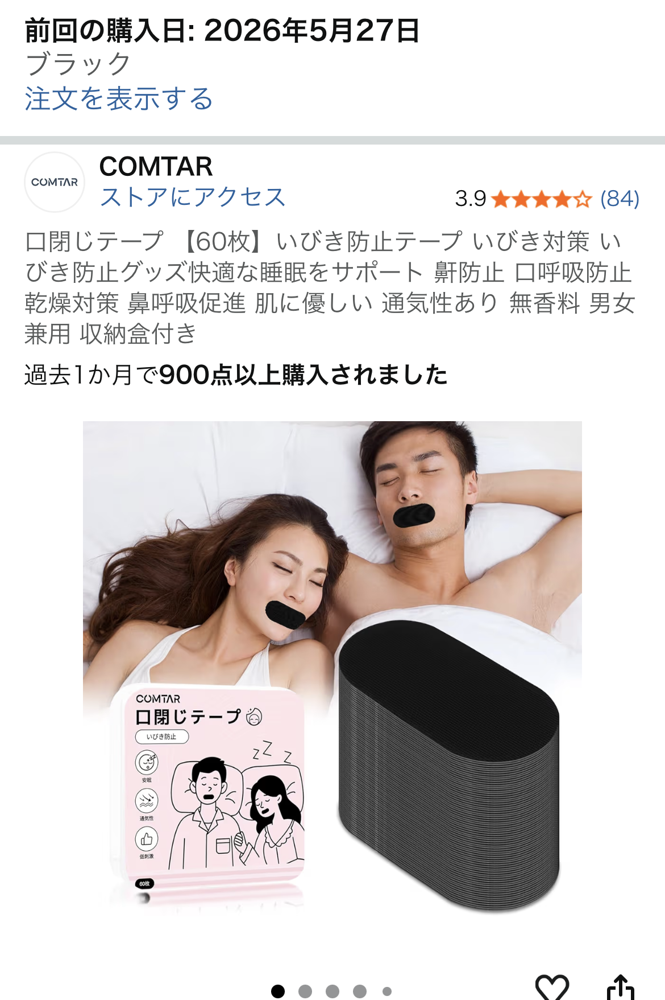

口を広範囲で塞ぐスリープテープを実際に使って分かったメリット・デメリット【X字テープとの比較レビュー】
※本記事は個人の使用感に基づくレビューであり、効果には個人差があります。医療行為や治療を目的とした内容ではありません。

「いろいろ試した結果、広範囲で塞ぐタイプが正解かも」と感じた理由
いびき対策や口呼吸対策として「口テープ」を探していると、X字タイプやI字タイプなど、形状の違う商品がたくさん見つかります。 私も同じようにいくつか試してきましたが、口コミで「いろいろな口テープを試しましたが、結局は口を広範囲で塞いだ方が良さそうです」と書かれていた 口を広範囲で覆うスリープテープを使ってみたところ、たしかに一段上の安心感があると感じました。
特に、すでに口テープに慣れている方であれば、「貼った状態でも普通に寝られる」「朝までしっかり貼り付いている」という口コミどおり、 夜中にテープがはがれてしまうストレスが減り、睡眠に集中しやすくなります。 一方で、初めて口テープを使う方にとっては「口を全部塞ぐのは少し怖い」と感じる可能性もあるため、メリットとデメリットを冷静に整理しておくことが大切です。
スリープテープ（口テープ）を実際に使って感じたメリット
まず、広範囲タイプのスリープテープで強く感じたのは、「口が開きにくい安心感」です。 X字やI字タイプは、どうしても口の端が少し動きやすく、寝返りを打ったときにテープがずれてしまうことがありました。 その点、広範囲で覆うタイプは、唇全体をしっかりホールドしてくれるため、寝ている間に口が開いてしまう可能性を物理的に減らしてくれます。
また、肌当たりのやさしさもポイントです。商品によって粘着力や素材は異なりますが、一般的なスリープテープは 肌への刺激を抑えた不織布ややわらかい粘着剤が使われていることが多く、正しく貼れば翌朝の肌トラブルはほとんど気になりません。 口呼吸が減ることで、朝起きたときの口の乾きや喉のイガイガ感が軽くなったと感じる人も多い印象です。
さらに、広範囲タイプは「貼れているかどうか」が一目で分かるので、毎日のセルフチェックがしやすいのも地味に便利です。 寝る前のルーティンとして、歯磨き→スキンケア→スリープテープという流れを作ると、自然と習慣化しやすくなります。
※リンク先はAmazonの商品ページです。価格や在庫状況は変更される場合があります。
スリープテープのデメリット・注意点【合わない人もいる】
一方で、広範囲で口を塞ぐスリープテープには、いくつかのデメリットや注意点もあります。 まず、「圧迫感」です。口テープに慣れていない方がいきなり広範囲タイプを使うと、 「息苦しい気がする」「寝る前から緊張してしまう」と感じることがあります。 実際には鼻呼吸ができていれば問題ないケースが多いものの、心理的なハードルは無視できません。
次に、肌が敏感な方はかぶれに注意が必要です。粘着面を何度も貼り直したり、強く引きはがしたりすると、 口周りの皮膚に負担がかかることがあります。使用前には必ずパッケージの注意書きを読み、 異常を感じた場合はすぐに使用を中止し、必要に応じて医師や専門家に相談してください。
また、鼻づまりがひどい日や、呼吸器系の持病がある方は、自己判断での使用を避けるべきケースもあります。 スリープテープはあくまで日用品であり、医療機器ではありません。いびきや睡眠時無呼吸が疑われる場合は、 まず医療機関で相談したうえで、補助的なアイテムとして検討するのが安心です。
X字・I字の口テープと比較して感じた違い
口コミにもあるように、「X字だったりI字の口テープよりも一段上の商品かなぁ」と感じたポイントは、 やはり「ホールド感」と「安心感」です。X字タイプは見た目が控えめで、初めてでも試しやすい一方、 寝返りを打ったときに一部だけはがれてしまい、気づいたら口が開いていた…ということもありました。
それに対して、広範囲タイプは「貼ったら最後までそのまま」という印象が強く、途中で気にする回数が減るのが大きなメリットです。 ただし、見た目のインパクトはそれなりにあるので、家族と同居している場合は、最初に「こういうテープを使うよ」と共有しておくと安心かもしれません。
まとめると、初めてならX字・I字、慣れてきたら広範囲タイプというステップアップのイメージで選ぶと失敗しにくいと感じました。 すでに口テープ経験者で、「もう少ししっかり口を閉じておきたい」と思っている方には、広範囲タイプのスリープテープはかなり有力な選択肢になります。
おすすめの使い方と選び方のポイント
スリープテープを快適に使うためには、「貼る前の準備」と「サイズ選び」が重要です。 まず、就寝前に口周りの皮脂や水分を軽く拭き取り、肌を清潔な状態にしておくことで、テープの密着度が高まり、はがれにくくなります。
サイズについては、口をしっかり覆える幅がありつつ、頬まで覆いすぎないバランスが理想です。 商品ページのサイズ表記を確認し、自分の口の大きさと照らし合わせて選ぶと失敗しにくくなります。 迷った場合は、口コミで「小さめ」「大きめ」といった声をチェックしておくとイメージしやすいでしょう。
なお、スリープテープはあくまで睡眠環境を整えるための日用品です。 効果の感じ方には個人差があり、「絶対にいびきがなくなる」「必ず熟睡できる」といった保証はありません。 その点を理解したうえで、自分の体調と相談しながら無理のない範囲で取り入れることが大切です。
まとめ：口テープに慣れている人ほど、広範囲タイプのスリープテープは試す価値あり
いろいろな口テープを試したうえで、「結局は口を広範囲で塞いだ方が良さそう」と感じた口コミには、実際に使ってみると納得感がありました。 X字・I字タイプよりもホールド感が高く、朝までしっかり貼り付いていてくれる安心感は、まさに一段上の使い心地です。
一方で、圧迫感や肌への負担など、合う・合わないの差が出やすいアイテムでもあります。 すでに口テープに慣れていて、「もう少ししっかり口を閉じておきたい」「口の乾きや喉のイガイガを少しでも減らしたい」と感じている方は、 広範囲タイプのスリープテープを候補に入れてみる価値は十分にあると感じました。
気になる方は、口コミや商品説明をよく確認したうえで、自分の生活スタイルや体調に合いそうかどうかをチェックしてみてください。
※本リンクはアフィリエイトリンクを含みます。購入を強制するものではなく、最終的な判断はご自身の責任でお願いいたします。